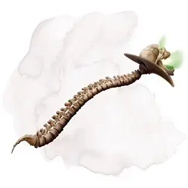

Палочка Оркуса
Wand of Orcus
Волшебная палочка, артефакт (требуется настройка)

Эту жуткую волшебную палочку редко можно встретить без её хозяина, Оркуса. Это устройство,такое же злое как его создатель, разделяет стремление демонического повелителя к уничтожению всего живого и превращению Материального Плана в мир нежити. Иногда Оркус позволяет Палочке покидать его. Когда это происходит, Палочка появляется в месте, в котором её настоящий хозяин чувствует возможность добиться выполнения своих планов.
Сделанная из костей, твёрдых как железо, Палочка увенчана увеличенным магией черепом, который когда-то принадлежал человеческому герою, убитому Оркусом. Палочка при помощи магии меняет свой размер, чтобы подходить хватке своего текущего владельца. В присутствии Палочки растения засыхают, вода портится, плоть гниёт, а паразиты наоборот, плодятся с ужасающей скоростью.
Все существа кроме Оркуса, пытающиеся настроиться на палочку, должны совершить спасбросок Телосложения Сл 17. При успехе существо получает урон некротической энергией 10к6. При провале существо умирает и становится зомби [zombie].
В руках того, кто настроился на неё, палочка может использоваться как магическая булава, предоставляющая бонус +3 к броскам атаки и урона ей. При попадании палочка дополнительно наносит 2к12 урона некротической энергией.
Случайные свойства. Палочка Оркуса обладает несколькими свойствами, определяемыми случайным образом:
- 2 малых положительных свойства
- 1 основное положительное свойство
- 2 малых отрицательных свойства
- 1 основное отрицательное свойство
Отрицательные свойства палочки Оркуса подавляются, пока она настроена на самого Оркуса.
Защита. Вы получаете бонус +3 к Классу Доспеха, пока держите палочку.
Заклинания. У Палочки есть 7 зарядов. Держа её, вы можете действием потратить 1 или несколько зарядов, чтобы наложить ей одно из следующих заклинаний (Сл спасброска 18): восставший труп [animate dead] (1 заряд), круг смерти [circle of death] (3 заряда), перст смерти [finger of death] (3 заряда), разговор с мёртвыми [speak with dead] (1 заряд), Слово Силы: смерть [power word kill] (4 заряда) или усыхание [blight] (2 заряда). Палочка ежедневно восстанавливает 1к4+3 заряда на рассвете.
Будучи настроенным на палочку, Оркус или благословлённый им последователь может накладывать заклинания палочки, тратя на 2 заряда меньше (минимум 0).
Призыв нежити. Если вы держите палочку, вы можете действием призвать скелетов [skeleton] и зомби [zombie], в любых пропорциях, но разделяя между ними 500 хитов. У каждой нежити среднее для неё число хитов. Нежить с помощью магии восстаёт из земли или как-то иначе формируется в пределах 300 футов от вас и подчиняется вашим командам, пока не будет уничтожена, но на рассвете следующего дня они рассыпаются обычными грудами костей и гниющими трупами. Использовав это свойство палочки, вы не можете использовать его повторно до следующего рассвета.
Настроенный на эту палочку Оркус может призывать любую нежить, не ограничиваясь скелетами и зомби. Эта нежить не погибает и не исчезает на рассвете следующего дня, она остаётся, пока Оркус не отпустит её.
Разум. Палочка Оркуса — разумный хаотично-злой предмет с Интеллектом 16, Мудростью 12 и Харизмой 16. Она обладает слухом и тёмным зрением в пределах 120 футов Это оружие может понимать языки Бездны и Общий, а также говорить и читать на них и телепатически общаться с владельцем.
Индивидуальность. Предназначение палочки в утолении жажды Оркуса убивать всех подряд в мультивселенной. Она хладнокровна, жестока, лишена чувства юмора, и ей не чужд нигилизм. Стремясь помочь своему настоящему хозяину, палочка притворяется верной своему текущему владельцу и торжественно клянётся в этой верности, обещая, например, помогать в свержении Оркуса.
Уничтожение Палочки. Для уничтожения Палочку Оркуса должен отнести на Положительный План тот самый древний герой, чей череп и венчает её. Чтобы это произошло, этого героя нужно вначале воскресить — а это нелёгкая задача, учитывая тот факт, что Оркус заточил его душу в тайном, хорошо охраняемом месте. Окунувшись в положительную энергию, палочка покроется трещинами и взорвётся, но если главное условие с героем не соблюдено, палочка мгновенно формируется на слое Оркуса в Бездне.